Hello, I am Sneha Paul. Currently, I am a Ph.D. Candidate at the Concordia Institute for Information Systems Engineering (CIISE), Concordia University, Montreal, Canada. I am supervised by Dr. Zachary Patterson and Dr. Nizar Bouguila, and my research focuses on 3D computer vision involving Point Clouds in unsupervised settings.
I have published papers in renowned places, such as CVPR, ECCV. I am experienced in Python and different libraries (e.g., PyTorch, Scikit-learn, and NumPy), model design, training, and deployment. I also have 2 years of academic teaching experience. I am honoured to receive several awards and scholarships throughout my academic journey.
Email | CV | Google Scholar | LinkedIn | Github
Education
- Doctor of Philosophy (Ph.D.) in Information and Systems Engineering
- Thesis: Unsupervised visual representation learning for special computer vision modalities.
- CGPA: 4.20/4.30 (as of Summer 2025)
- Master of Applied Science (MASc) in Quality Systems Engineering
- Thesis: An efficient neural network architecture and training protocol for 3D point cloud classification.
- CGPA: 4.15/4.30
- Bachelor of Science (BSc) in Urban and Regional Planning
- CGPA: 3.80/4.00 — 1st Class 1st, Gold Medalist (selected for upcoming graduation ceremony).
Concordia University, Montreal, QC, Canada, Jan 2023 - Present (Expected Fall 2026)
Concordia University, Montreal, QC, Canada, Sep 2021 - Dec 2022
Khulna University of Engineering & Technology, Khulna, Bangladesh, Apr 2015 - May 2019
Experiences
- Research Intern
- Research topic: Semantic segmentation of fish-eye images for autonomous driving.
- Developed a supervised fish-eye semantic segmentation framework based on transfer learning, published at ICMLA'23.
- Developed a semi-supervised fish-eye semantic segmentation framework, published and achieved the Best Paper Award at TRB'24. Extended version published in Journal of Imaging.
- Research Intern
- Research topic: Challenges of Data Integration in Digital Twin: A Review.
- Performed extensive literature review on data integration for Digital Twin at road intersections.
- Graduate Research Assistant
- Research Area: Unsupervised learning, representation learning, computer vision.
- Lecturer
- Taught undergraduate courses in Urban and Regional Planning.
BusPas Inc., Montreal, QC, Canada, Jan 2023 - Aug 2023
Niosense, Montreal, QC, Canada, Jan 2022 - Mar 2022
CIISE, Concordia University, Montreal, QC, Canada, Sep 2021 - Present
Dept. of Urban and Regional Planning, KUET, Khulna, Bangladesh, Jul 2019 - Jun 2021
Research
|
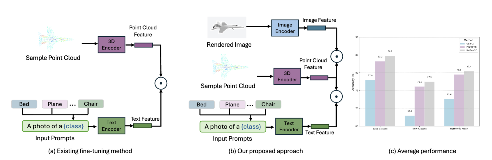 |
Domain Generalizable Adaptation of 3D Vision-Language Models via Regularized Fine-Tuning
Sneha Paul, Zachary Patterson, Nizar Bouguila Transactions on Machine Learning Research (TMLR 2026) TLDR: A regularized fine-tuning approach for 3D vision-language models that adapts to downstream tasks while preserving generalization to novel classes, improving both base and new-class accuracy. |
|
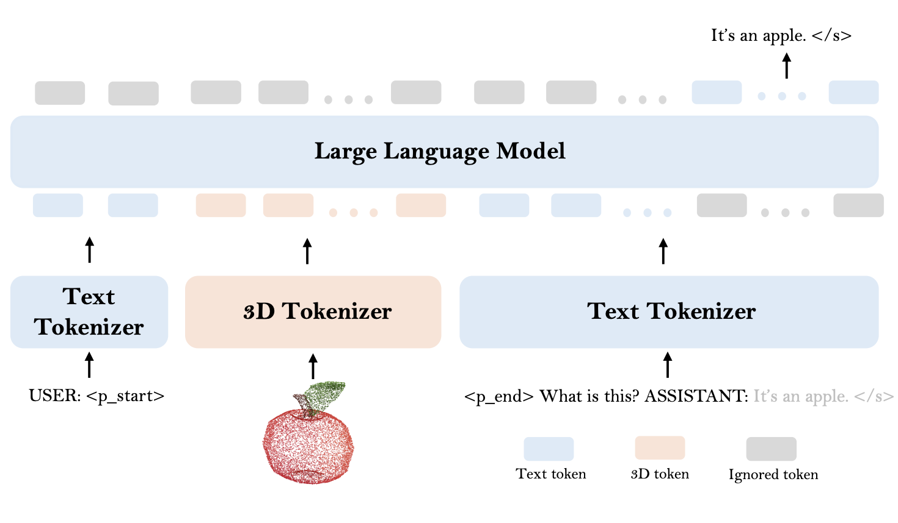 |
Point Cloud as a Foreign Language for Multi-modal Large Language Model
Sneha Paul, Zachary Patterson, Nizar Bouguila Conference on Computer Vision and Pattern Recognition (CVPR 2026) ArXiv | Project | Code TLDR: We introduce a lightweight, trainable tokenizer that projects point clouds into an LLM's input space, enabling multi-modal large language models to natively understand 3D point cloud data. |
|
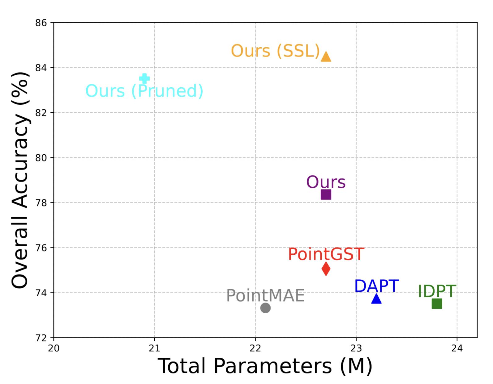 |
An Adapter-free Fine-tuning Approach for Tuning 3D Foundation Models
Sneha Paul, Zachary Patterson, Nizar Bouguila International Conference on Pattern Recognition and Artificial Intelligence (ICPRAI 2026) ArXiv TLDR: An adapter-free approach for fine-tuning 3D foundation models (e.g., Point-MAE) that avoids extra parameters while achieving competitive performance. |
|
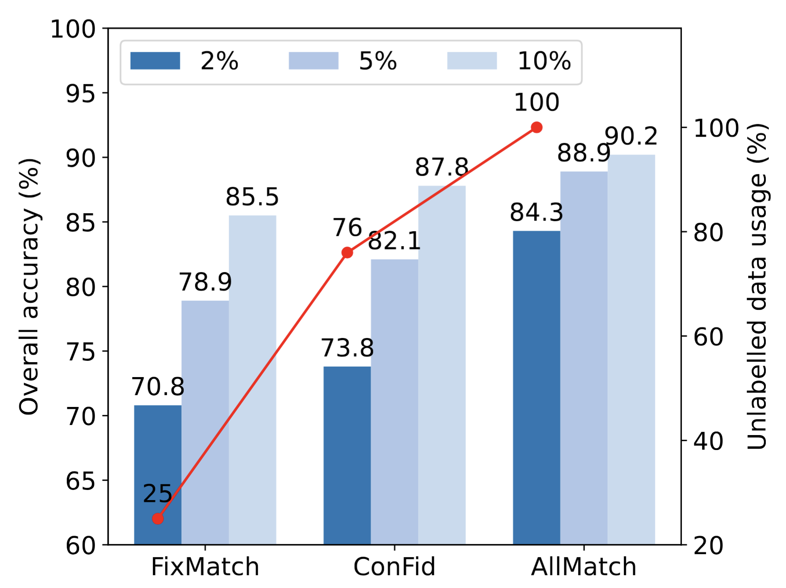 |
Improving 3D Semi-supervised Learning by Effectively Utilizing All Unlabelled Data
Sneha Paul, Zachary Patterson, Nizar Bouguila European Conference on Computer Vision (ECCV 2024) Paper | ArXiv | Project | Code TLDR: A semi-supervised framework for 3D point cloud learning that effectively leverages all unlabelled data to boost performance on downstream tasks. |
|
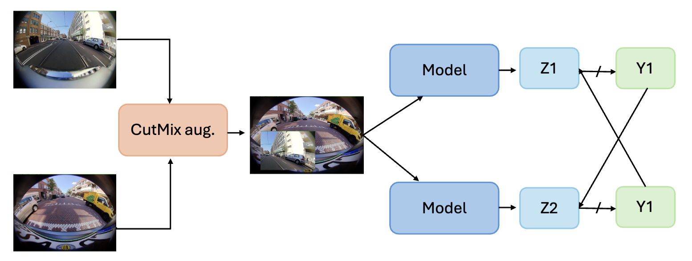 |
FishSegSSL: A Semi-supervised Semantic Segmentation Framework for Fish-eye Images
Sneha Paul, Zachary Patterson, Nizar Bouguila Journal of Imaging, 2024 Paper | Code TLDR: A semi-supervised semantic segmentation framework tailored for fish-eye camera images, addressing the challenges of large-FoV distortion in autonomous driving scenarios. |
|
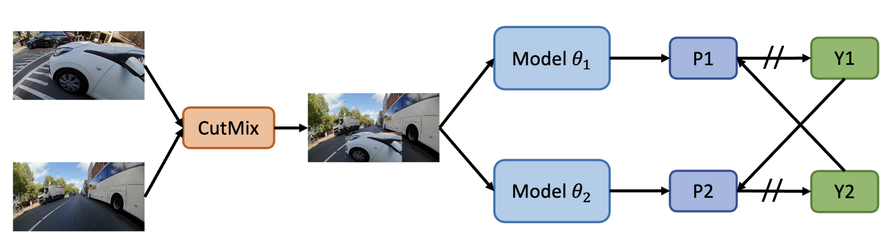 |
Semi-supervised Semantic Segmentation on Vehicle-mounted Fish-eye Camera Images
Sneha Paul, Zachary Patterson, Nizar Bouguila Transportation Research Board 103rd Annual Meeting (TRB 2024) 🏆 Best Paper Award TLDR: A semi-supervised semantic segmentation approach for vehicle-mounted fish-eye camera images, leveraging unlabelled driving data to improve performance under wide-FoV distortions. |
|
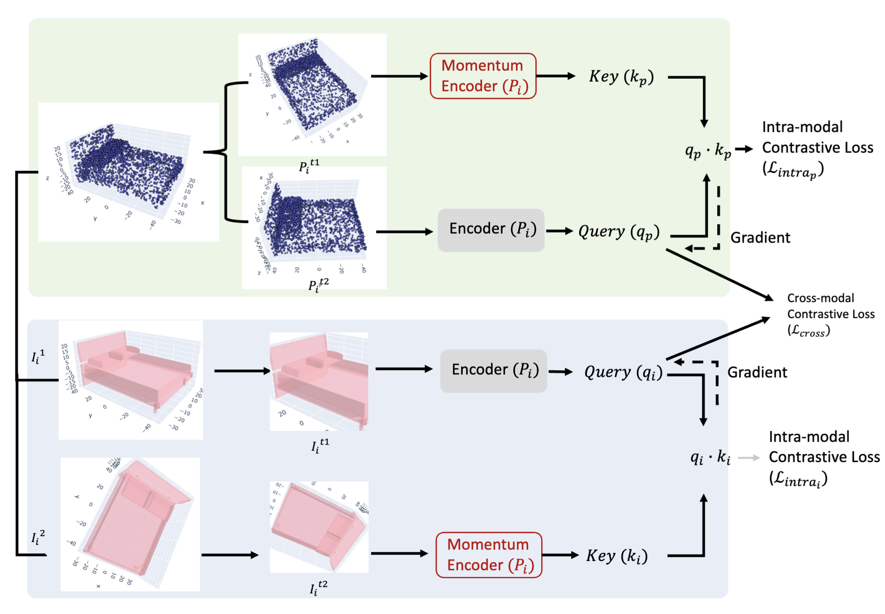 |
CrossMoCo: Multi-modal Momentum Contrastive Learning for Point Cloud
Sneha Paul, Zachary Patterson, Nizar Bouguila 20th Conference on Robots and Vision (CRV 2023) Paper | Code TLDR: A multi-modal momentum contrastive learning method that learns rich 3D point cloud representations by leveraging cross-modal consistency between point clouds and other modalities. |
|
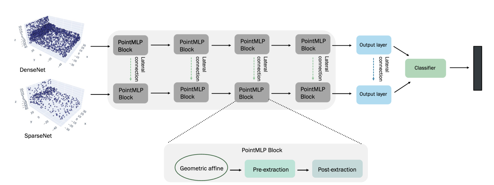 |
DualMLP: A Two-stream Fusion Model for 3D Point Cloud Classification
Sneha Paul, Zachary Patterson, Nizar Bouguila The Visual Computer Journal, 2023 Paper | Code |
|
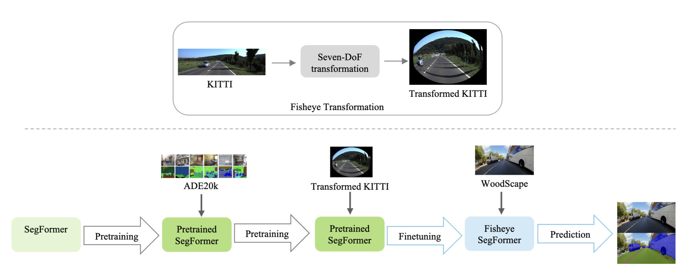 |
Semantic Segmentation Using Transfer Learning on Fisheye Images
Sneha Paul, Zachary Patterson, Nizar Bouguila 22nd International Conference on Machine Learning and Applications (ICMLA 2023) Paper |
|
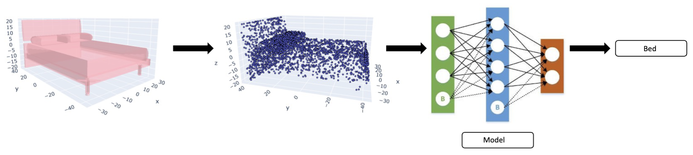 |
Improved Training for 3D Point Cloud Classification
Sneha Paul, Zachary Patterson, Nizar Bouguila IAPR Joint International Workshops on Statistical Techniques in Pattern Recognition and Structural and Syntactic Pattern Recognition (S+SSPR 2022) Paper | Code |
|
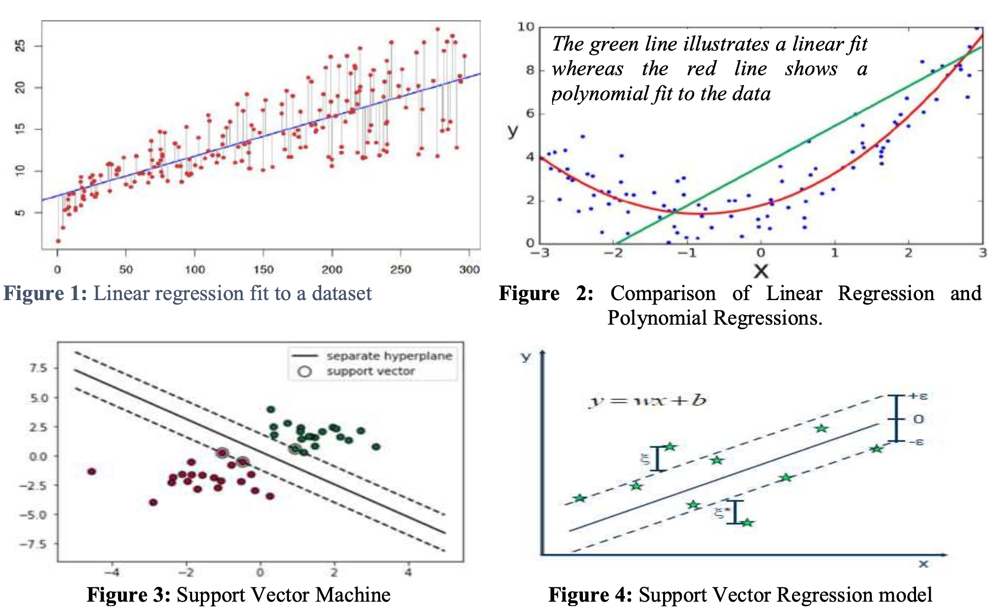 |
Forecasting the Average Temperature Rise in Bangladesh: A Time Series Analysis
Sneha Paul, Shuvendu Roy Journal of Engineering Science, 11(1), 83-91 |
|
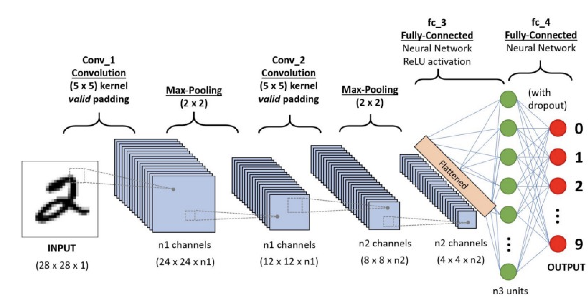 |
Land-Use Detection Using Residual Convolutional Neural Network
Shuvendu Roy, Sneha Paul 1st International Conference on Advances in Science, Engineering and Robotics Technology (ICASERT 2019) |
Academic Services
Reviewing
- British Machine Vision Conference (BMVC), 2025
- Computer Vision and Pattern Recognition (CVPR), 2025
- International Conference on Learning Representations (ICLR), 2025
- European Conference on Computer Vision (ECCV), 2024
- International Conference on Machine Learning and Applications (ICMLA), 2023
- International Conference on Robots and Vision (CRV), 2023
- Pattern Recognition (Journal)
- IEEE Transactions on Industrial Informatics (TII)
- IEEE Transactions on Neural Networks and Learning Systems (TNNLS)
- Engineering Applications of Artificial Intelligence
Awards & Scholarships
- Best Paper Award, TRB AED30 Information Systems and Technology Committee — Transportation Research Board 103rd Annual Meeting, Washington DC, Jan 2024
- CIRRELT Doctoral Excellence Scholarship, Centre interuniversitaire de recherche sur les réseaux d'entreprise, la logistique et le transport, Jan 2024
- Concordia University International Tuition Award Excellence, 2023
- Concordia University Graduate Studies Conference and Exposition Award, 2022, 2023
- CIRRELT Masters' Excellence Scholarship, Jan 2022
- University Gold Medal (selected) — Upcoming Convocation Ceremony, KUET
- Dean's Award for Excellent Performance, KUET, 2016, 2018, 2019
- Academic Scholarship, KUET, 2015–2019